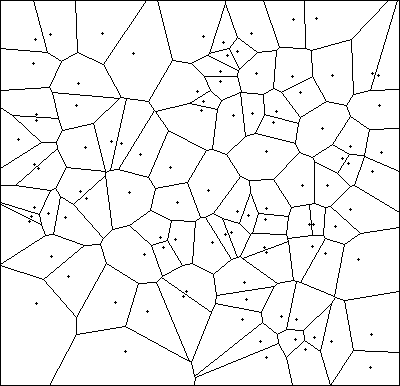
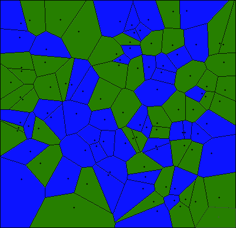
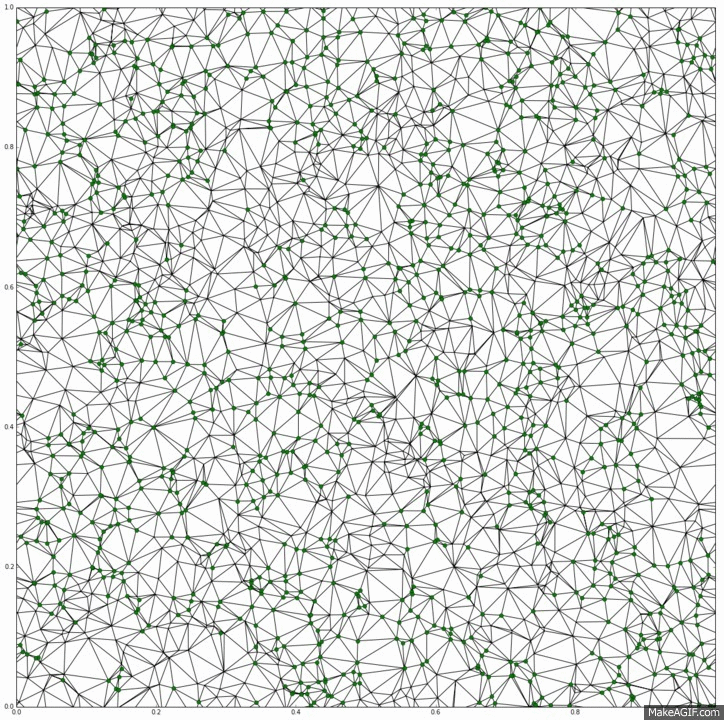
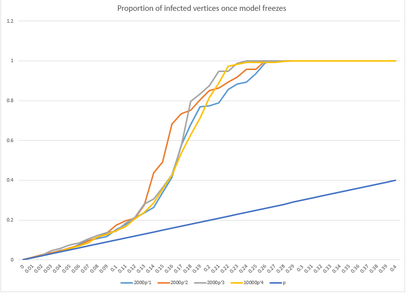

Overview
My goal is to translate the bootstrap percolation model from the discrete to a continuous setting. Below I propose a global cascade model (infection model) for a Voronoi diagram in the plane. I have yet to establish bounds on critical behavior of this model, but I have ran several simulations in hopes of understanding its behavior better. This model has a marked difference from the bootstrap percolation model: There will always be pockets of cells that never become infected for any initial infection rate less than one.
Voronoi Percolation
First, what is a Voronoi diagram? We randomly place seeds in the plane and then every point in the plane is assigned to the cell of the seed closest to it. It looks something like this (from Southlight):

Now what if we color the cells of this diagram with two colors? We go to each cell, independently, and color the cell green with some probability $p$. We call this a Voronoi Percolation process in the plane with probability $p$. If we choose $p$ to be close enough to one, we should be able to start at some cell and continue walking on only unvisited green cells forever. The question is, what is the smallest $p$ for which this holds? This is the percolation threshold.
The percolation threshold was proved to be 1/2!
If we color the above diagram green with probability 1/2

Bootstrap Percolation
Bootstrap percolation has been explored in the square grid. This is where we initially infect cells with some probability $p$ and then infect a square if at least two of its neighbors (sharing an edge) are infected.
From MathWorld,

Below, I outline a model which combines these two models.
Bootstrap Voronoi Percolation
With probability $p$, create a Voronoi Percolation process in the plane with colors white and green at time zero (coloring each cell independently green with probability $p$). At time $t=1$, for all white cells, if a white cell has at least as many green neighbors as white neighbors, we color the white cell green. We repeat this recoloring again for our new coloring, and so on as time goes to infinity. We define the coloring at $t-\infty$ for a cell to be green if for some finite $t$ the color of that cell is green and white if else. We say this model percolates if at $t-\infty$ there exists a path of green cells for which we can walk along forever. For what minimal choice of $p$, does this model percolate at $t-\infty$ with certainty?
Approaching this problem has been challenging. At this point, I am not aware of any approaches for establishing bounds on $p$ beyond $0\leq p\leq 1/2.$ (When $p\geq1/2$ then the model percolates before the infection begins.)
A Potential Method for an Upper Bound: Freeze the infection after a fixed number of steps (rather than letting $t$ continue off to infinity) and see if the model percolates. For starters try $t=1$. While after one step over half the cells may be infected, this is not sufficient for concluding percolation occurs—the infected sites are no longer colored independently as in the Voronoi Percolation process.
Potential Method for the Lower Bound: Make the model more infectious, rather than infecting a cell if at least half of its neighbors are infected, infect a cell if a fixed number of neighbors are infected.
If we infect a cell if one of its neighbors is infected, then infecting one cell is sufficient to infect the whole plane (which isn't that interesting).
We are guaranteed every cell will have a least 3 neighbors, so we can infect a cell if two of its neighbors are infected. Unfortunately, this will also lead to the entire plan being infected if we start with two infected sites next to each other. (Think about why!)
What if we infect under two conditions: if 3 of its neighbors are infected OR infect if 2 of its neighbors are infected for cells with less than 6 neighbors (we require this condition to ensure our model is more infectious than our original model). This model seems more promising since the average number of neighbors is 6.
Things We Know: We know that before infection begins every green cluster must be finite in size and there exists a "boundary" of non-infected cells around our cluster. Further, if the cluster is finite after the infection runs its course, then in addition to the new "boundary" around the cluster being non-infected (by definition), the neighbors of boundary cells must have a low infection rate. Further, it seem that if a cell on the exterior of the boundary is infected, then it likely was infected initially, not infected through the process.
Difference Between Bootstrap Percolation (on $\mathbb{Z}^2$) and Bootstrap Voronoi Percolation: There will always be pockets of cells in the Bootstrap Voronoi Percolation that never become infected for any initial infection rate less than one. Why is this? There will always exist small regions where the vertices making up the boundary have more neighbors within the region then leaving the region. Thus if our region is of size n, and p<1, then regardless what happens outside the region, the region will never be completely active with probability greater than $(1-p)^n$. Since there are an infinite number of regions with this property, we can be certain that at least one of them will never be active. In the Bootstrap Percolation model on the plane, the entire plane will be covered for any positive probability of initial infection.
Simulations
Now we turn to simulations to see if they provide any insight. Continuous regions are difficult to compute so we turn to Delaunay Triangulation. This triangulation creates a graph where Vertices are the cells of the Voronoi model and two Vertices are connected if their respective cells where neighbors (this triangulation is unique). We infect a vertex if at least half of its neighbors are infected.
From MathWorld,

The following simulation is done on the unit grid with a periodic border (torus) with 2,000 points. Points are placed uniform randomly and infected with probability .3.

As you can see every site ends up becoming infected after 11 steps. This suggests the critical value is less than .3.
What we can consider is the proportion of infected vertices once the model freezes for different values of p for the initial infection. Below are the graphs of three models with 2,000 vertices and one with 10,000 vertices.

As you can see, the number of vertices grows first linearly as $p$ increases and then increases rapidly.
We can also consider the proportion of infected vertices in the largest component when the model freezes. For that we crank it up a notch: Two models with 10,000 Vertices and one with 50,000 vertices.

Once again we have quite the transition. Below is the code. Please comment above if you have any questions or remarks!
Code
All of the models were created in Python. I used Excel to graph the values. This code is clearly not optimized but hopefully highlights some of my methods. Scipy and NetworkX were hugely helpful in writing these programs.
Code Needed for All Simulations
import numpy as np
import matplotlib.pyplot as plt
from scipy.spatial import Delaunay
x=2000 #number of sites
bcolor=np.random.rand(x) #assigns each site a value between zero and one to be colored
def periodtri(x) :
points = np.random.rand(x, 2) #randomly places points in 2D
points1=np.add(points,np.array([1, 0])) #repeats tiling to obtain periodic condition
points2=np.add(points,np.array([1, 1]))
points3=np.add(points,np.array([0, 1]))
points4=np.add(points,np.array([-1, 1]))
points5=np.add(points,np.array([-1, 0]))
points6=np.add(points,np.array([-1, -1]))
points7=np.add(points,np.array([0, -1]))
points8=np.add(points,np.array([1, -1]))
allpoints=np.concatenate((points,points1,points2,points3,points4,points5,points6,points7,points8))
tri = Delaunay(allpoints) #triangulates all points
return(points, allpoints,tri)
points, allpoints, tri = periodtri(x)
def myneigh2(mytri,i,x): #Determines the neighbors of vertex i from Delaunay triangulation mytri
#x number of sites
a=mytri.vertex_neighbor_vertices
b=a[0]
c=a[1]
allneighbors=c[b[i]:b[i+1]]
trueneigh=np.unique(allneighbors % x) #impliments periodic boundary
#each "original" vertex is repeated every x-th element in allpoints (corresponds to kx in allneighbors)
return(trueneigh)
def toblue2(mytri,x): #infects all sites if at least half of the neighbor sites are infected
#(why toblue?: python colored the points blue originally)
for i in range(x):
if 2*sum(color[myneigh2(mytri,i,x)]) <= len(myneigh2(mytri,i,x)):
color[i]=1
def infecting(points,tri,color): #this function can be cleaned up significantly
blueness=[sum(color)] #number of sites colored
colorsofar=color #intializing (keeps track of coloring)
toblue2(tri,x) #color once
colorsofar=np.vstack((colorsofar,color))
blueness.append(sum(color))
while blueness[len(blueness)-1]<blueness[len(blueness)-2]:
toblue2(tri,x)
colorsofar=np.vstack((colorsofar,color))
blueness.append(sum(color))
del blueness[-1]
colorsofar=colorsofar[0:(len(colorsofar)-1)]
return(blueness,colorsofar)
Outputs Graphs of one Infection Over Time
p=.3 #initial infection rate
color=(bcolor<p)*1 #colors the inital sites
myblueness, mycolorsofar = infecting(points,tri,color) #runs the infection
def plotgrowthpoints(mypoints,colorsf,i): #plots of growth
first=mypoints[colorsf[i]==1]
plt.plot(first[:,0], first[:,1], 'o')
fig = plt.figure()
for i in range(len(myblueness)-1):
plt.figure(figsize=(9,9),dpi=200)
plt.ylim([0,1]) #fix scale
plt.xlim([0,1]) #fix scale
plt.triplot(allpoints[:,0], allpoints[:,1], tri.simplices.copy())
plotgrowthpoints(points,mycolorsofar,i)
plt.show()
Proportion of Vertices Infected
Returns vector of proportions infected for range of p between zero and one.
resolution=.01 #how much to increase p by before revaluating
a = [1] * (np.ceil(1/resolution)+1) #initializes the final proportion to be one.
for i in range(int(np.ceil(1/resolution))+1):
p=i/np.ceil(1/resolution)
if i==0:
color=bcolor<p
else:
color=np.maximum((bcolor<p)*1,colorsofar[-1])
#if a site becomes eventually infected for a smaller p
#then it will eventually become infected for a larger p (monotonic)
blueness, colorsofar = infecting(points,tri,color) #runs infection
a[i] = blueness[-1]/x #final proportion infected
if blueness[-1]/x==1.0: #monotonic and max is one
break
print(a)
Proportion of Vertices In Giant Component
Returns vector of proportions of vertices in the giant component for range of p between zero and one.
import networkx as nx
resolution=.01 #how much to increase p by before revaluating
a = [1] * (np.ceil(1/resolution)+1) #initializes the final proportion to be one.
adjlist=[] #generates adjacency list for networkx
for i in range(x):
b=str(myneigh2(tri,i,x))
b= str(i) + " " + b[1:-1]
adjlist.append(b)
m=np.array(range(x))
for i in range(int(np.ceil(1/resolution))+1):
p=i/np.ceil(1/resolution)
if i==0:
color=bcolor<p
else:
color=np.maximum((bcolor<p)*1,colorsofar[-1])
#if a site becomes eventually infected for a smaller p
#then it will eventually become infected for a larger p (monotonic)
blueness, colorsofar = infecting(points,tri,color)
if sum(colorsofar[-1])==0: #handles empty graphs
a[i] = 0
else:
G=nx.parse_adjlist(adjlist, nodetype =int)
G1=G
G1.remove_nodes_from(m[(colorsofar[-1])==0])
Gcc=sorted(nx.connected_component_subgraphs(G1), key = len, reverse=True) #components
G0=Gcc[0] #largest component
a[i]=G0.number_of_nodes()/x
if blueness[-1]/x==1.0: #monotonic and max is one
break
print(a)